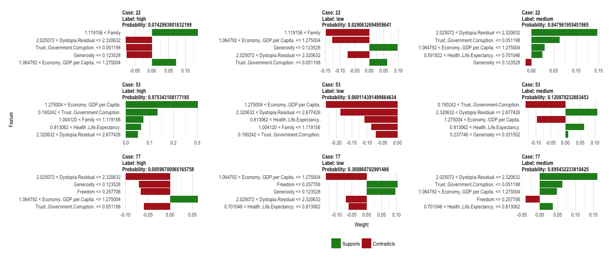
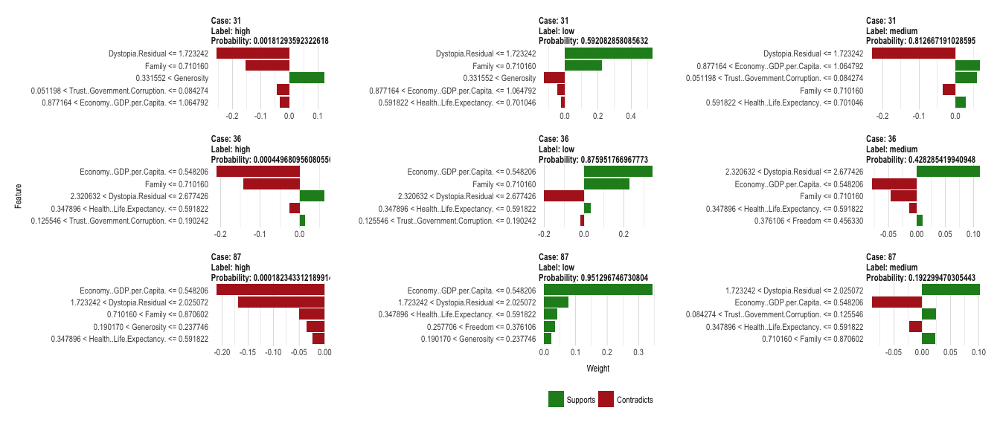
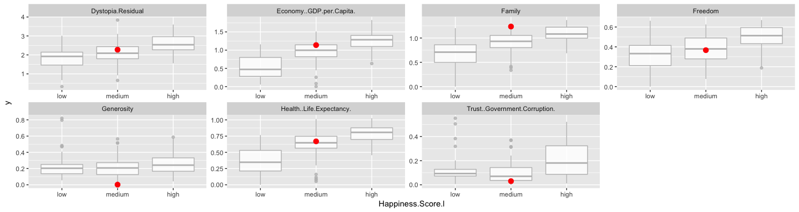

Explaining complex machine learning models with LIME
The classification decisions made by machine learning models are usually difficult - if not impossible - to understand by our human brains. The complexity of some of the most accurate classifiers, like neural networks, is what makes them perform so well - often with better results than achieved by humans. But it also makes them inherently hard to explain, especially to non-data scientists.
Especially, if we aim to develop machine learning models for medical diagnostics, high accuracies on test samples might not be enough to sell them to clinicians. Doctors and patients alike will be less inclined to trust a decision made by a model that they don’t understand.
Therefore, we would like to be able to explain in concrete terms why a model classified a case with a certain label, e.g. why one breast mass sample was classified as “malignant” and not as “benign”.
Local Interpretable Model-Agnostic Explanations (LIME) is an attempt to make these complex models at least partly understandable. The method has been published in
lime is able to explain all models for which we can obtain prediction probabilities (in R, that is every model that works with predict(type = "prob")). It makes use of the fact that linear models are easy to explain because they are based on linear relationships between features and class labels: The complex model function is approximated by locally fitting linear models to permutations of the original training set.
On each permutation, a linear model is being fit and weights are given so that incorrect classification of instances that are more similar to the original data are penalized (positive weights support a decision, negative weights contradict them). This will give an approximation of how much (and in which way) each feature contributed to a decision made by the model.
The code for lime has originally been made available for Python but the awesome Thomas Lin Pedersen has already created an implementation in R. It is not on CRAN (yet, I assume), but you can install it via Github:
devtools::install_github("thomasp85/lime")
The data I am using is the World Happiness Data from my last post. So, let’s train a neural network on this data to predict three classes of the happiness scores: low, medium and high.
load("data_15_16.RData")
# configure multicore
library(doParallel)
cl <- makeCluster(detectCores())
registerDoParallel(cl)
library(caret)
set.seed(42)
index <- createDataPartition(data_15_16$Happiness.Score.l, p = 0.7, list = FALSE)
train_data <- data_15_16[index, ]
test_data <- data_15_16[-index, ]
set.seed(42)
model_mlp <- caret::train(Happiness.Score.l ~ .,
data = train_data,
method = "mlp",
trControl = trainControl(method = "repeatedcv",
number = 10,
repeats = 5,
verboseIter = FALSE))
The explain function
The central function of lime is lime() It creates the function that is used in the next step to explain the model’s predictions.
We can give a couple of options. Check the help ?lime for details, but the most important to think about are:
- Should continuous features be binned? And if so, into how many bins?
Here, I am keeping the default bin_continuous = TRUE but specify 5 instead of 4 (the default) bins with n_bins = 5.
library(lime)
explain <- lime(train_data, model_mlp, bin_continuous = TRUE, n_bins = 5, n_permutations = 1000)
Now, let’s look at how the model is explained. Here, I am not going to look at all test cases but I’m randomly choosing three cases with correct predictions and three with wrong predictions.
pred <- data.frame(sample_id = 1:nrow(test_data),
predict(model_mlp, test_data, type = "prob"),
actual = test_data$Happiness.Score.l)
pred$prediction <- colnames(pred)[3:5][apply(pred[, 3:5], 1, which.max)]
pred$correct <- ifelse(pred$actual == pred$prediction, "correct", "wrong")
Beware that we need to give our test-set data table row names with the sample names or IDs to be displayed in the header of our explanatory plots below.
library(tidyverse)
pred_cor <- filter(pred, correct == "correct")
pred_wrong <- filter(pred, correct == "wrong")
test_data_cor <- test_data %>%
mutate(sample_id = 1:nrow(test_data)) %>%
filter(sample_id %in% pred_cor$sample_id) %>%
sample_n(size = 3) %>%
remove_rownames() %>%
tibble::column_to_rownames(var = "sample_id") %>%
select(-Happiness.Score.l)
test_data_wrong <- test_data %>%
mutate(sample_id = 1:nrow(test_data)) %>%
filter(sample_id %in% pred_wrong$sample_id) %>%
sample_n(size = 3) %>%
remove_rownames() %>%
tibble::column_to_rownames(var = "sample_id") %>%
select(-Happiness.Score.l)
The explain function from above can now be used with our test samples. Further options we can specify are:
- How many features do we want to use in the explanatory function?
Let’s say we have a big training set with 100 features. Looking at all features and trying to understand them all could be more confusing than helpful. And very often, a handful of very important features will be enough to predict test samples with a reasonable accuracy (see also my last post on OneR). So, we can choose how many features we want to look at with the n_features option.
- How do we want to choose these features?
Next, we specify how we want this subset of features to be found. The default, auto, uses forward selection if we chose n_features <= 6 and uses the features with highest weights otherwise. We can also directly choose feature_select = "forward_selection", feature_select = "highest_weights" or feature_select = "lasso_path". Again, check ?lime for details.
In our example dataset, we only have 7 features and I want to look at the top 5.
I also want to have explanation for all three class labels in the response variable (low, medium and high happiness), so I am choosing n_labels = 3.
explanation_cor <- explain(test_data_cor, n_labels = 3, n_features = 5)
explanation_wrong <- explain(test_data_wrong, n_labels = 3, n_features = 5)
It will return a tidy tibble object that we can plot with plot_features():
plot_features(explanation_cor, ncol = 3)

plot_features(explanation_wrong, ncol = 3)

The information in the output tibble is described in the help function ?lime and can be viewed with
tibble::glimpse(explanation_cor)
So, what does this tell us, now? Let’s look at case 22 (the first row of our plot for correctly predicted classes): This sample has been correctly predicted to come from the medium happiness group because it
- has a dystopia value between 2.03 & 2.32,
- a trust/government corruption score below 0.05,
- a GDP/economy score between 1.06 and 1.23 and
- a life expectancy score between 0.59 and 0.7.
From the explanation for the label “high” we can also see that this case has a family score bigger than 1.12, which is more representative of high happiness samples.
pred %>%
filter(sample_id == 22)
## sample_id low medium high actual prediction correct
## 1 22 0.02906327 0.847562 0.07429938 medium medium correct
The explanatory function named dystopia the most strongly supporting feature for this prediction. Dystopia is an imaginary country that has the world’s least-happy people. The purpose in establishing Dystopia is to have a benchmark against which all countries can be favorably compared (no country performs more poorly than Dystopia) in terms of each of the six key variables […]
The explanatory plot tells us for each feature and class label in which range of values a representative data point would fall. If it does, this gets counted as support for this prediction, if it does not, it gets scored as contradictory. For case 22 and the feature dystopia, the data point 2.27 falls within the range for medium happiness (between 2.03 and 2.32) with a high weight.
When we look at where this case falls on the range of values for this feature, we can see that is indeed very close to the median of medium training cases and further away from the medians for high and low training cases. The other supportive features show us the same trend.
train_data %>%
gather(x, y, Economy..GDP.per.Capita.:Dystopia.Residual) %>%
ggplot(aes(x = Happiness.Score.l, y = y)) +
geom_boxplot(alpha = 0.8, color = "grey") +
geom_point(data = gather(test_data[22, ], x, y, Economy..GDP.per.Capita.:Dystopia.Residual), color = "red", size = 3) +
facet_wrap(~ x, scales = "free", ncol = 4)

An overview over the top 5 explanatory features for case 22 is stored in:
as.data.frame(explanation_cor[1:9]) %>%
filter(case == "22")
## case label label_prob model_r2 model_intercept
## 1 22 medium 0.84756196 0.05004205 0.5033729
## 2 22 medium 0.84756196 0.05004205 0.5033729
## 3 22 medium 0.84756196 0.05004205 0.5033729
## 4 22 medium 0.84756196 0.05004205 0.5033729
## 5 22 medium 0.84756196 0.05004205 0.5033729
## 6 22 high 0.07429938 0.06265119 0.2293890
## 7 22 high 0.07429938 0.06265119 0.2293890
## 8 22 high 0.07429938 0.06265119 0.2293890
## 9 22 high 0.07429938 0.06265119 0.2293890
## 10 22 high 0.07429938 0.06265119 0.2293890
## 11 22 low 0.02906327 0.07469729 0.3528088
## 12 22 low 0.02906327 0.07469729 0.3528088
## 13 22 low 0.02906327 0.07469729 0.3528088
## 14 22 low 0.02906327 0.07469729 0.3528088
## 15 22 low 0.02906327 0.07469729 0.3528088
## feature feature_value feature_weight
## 1 Dystopia.Residual 2.27394 0.14690100
## 2 Trust..Government.Corruption. 0.03005 0.06308598
## 3 Economy..GDP.per.Capita. 1.13764 0.02944832
## 4 Health..Life.Expectancy. 0.66926 0.02477567
## 5 Generosity 0.00199 -0.01326503
## 6 Family 1.23617 0.13629781
## 7 Generosity 0.00199 -0.07514534
## 8 Trust..Government.Corruption. 0.03005 -0.07574480
## 9 Dystopia.Residual 2.27394 -0.07687559
## 10 Economy..GDP.per.Capita. 1.13764 0.07167086
## 11 Family 1.23617 -0.14932931
## 12 Economy..GDP.per.Capita. 1.13764 -0.12738346
## 13 Generosity 0.00199 0.09730858
## 14 Dystopia.Residual 2.27394 -0.07464384
## 15 Trust..Government.Corruption. 0.03005 0.06220305
## feature_desc
## 1 2.025072 < Dystopia.Residual <= 2.320632
## 2 Trust..Government.Corruption. <= 0.051198
## 3 1.064792 < Economy..GDP.per.Capita. <= 1.275004
## 4 0.591822 < Health..Life.Expectancy. <= 0.701046
## 5 Generosity <= 0.123528
## 6 1.119156 < Family
## 7 Generosity <= 0.123528
## 8 Trust..Government.Corruption. <= 0.051198
## 9 2.025072 < Dystopia.Residual <= 2.320632
## 10 1.064792 < Economy..GDP.per.Capita. <= 1.275004
## 11 1.119156 < Family
## 12 1.064792 < Economy..GDP.per.Capita. <= 1.275004
## 13 Generosity <= 0.123528
## 14 2.025072 < Dystopia.Residual <= 2.320632
## 15 Trust..Government.Corruption. <= 0.051198
In a similar way, we can explore why some predictions were wrong.
If you are interested in more machine learning posts, check out the category listing for machine_learning on my blog.
sessionInfo()
## R version 3.3.3 (2017-03-06)
## Platform: x86_64-apple-darwin13.4.0 (64-bit)
## Running under: macOS Sierra 10.12.3
##
## locale:
## [1] en_US.UTF-8/en_US.UTF-8/en_US.UTF-8/C/en_US.UTF-8/en_US.UTF-8
##
## attached base packages:
## [1] parallel stats graphics grDevices utils datasets methods
## [8] base
##
## other attached packages:
## [1] dplyr_0.5.0 purrr_0.2.2 readr_1.1.0
## [4] tidyr_0.6.1 tibble_1.3.0 tidyverse_1.1.1
## [7] RSNNS_0.4-9 Rcpp_0.12.10 lime_0.1.0
## [10] caret_6.0-73 ggplot2_2.2.1 lattice_0.20-35
## [13] doParallel_1.0.10 iterators_1.0.8 foreach_1.4.3
##
## loaded via a namespace (and not attached):
## [1] lubridate_1.6.0 assertthat_0.2.0 glmnet_2.0-5
## [4] rprojroot_1.2 digest_0.6.12 psych_1.7.3.21
## [7] R6_2.2.0 plyr_1.8.4 backports_1.0.5
## [10] MatrixModels_0.4-1 stats4_3.3.3 evaluate_0.10
## [13] httr_1.2.1 hrbrthemes_0.1.0 lazyeval_0.2.0
## [16] readxl_0.1.1 minqa_1.2.4 SparseM_1.76
## [19] extrafontdb_1.0 car_2.1-4 nloptr_1.0.4
## [22] Matrix_1.2-8 rmarkdown_1.4 labeling_0.3
## [25] splines_3.3.3 lme4_1.1-12 extrafont_0.17
## [28] stringr_1.2.0 foreign_0.8-67 munsell_0.4.3
## [31] hunspell_2.3 broom_0.4.2 modelr_0.1.0
## [34] mnormt_1.5-5 mgcv_1.8-17 htmltools_0.3.5
## [37] nnet_7.3-12 codetools_0.2-15 MASS_7.3-45
## [40] ModelMetrics_1.1.0 grid_3.3.3 nlme_3.1-131
## [43] jsonlite_1.4 Rttf2pt1_1.3.4 gtable_0.2.0
## [46] DBI_0.6-1 magrittr_1.5 scales_0.4.1
## [49] stringi_1.1.5 reshape2_1.4.2 xml2_1.1.1
## [52] tools_3.3.3 forcats_0.2.0 hms_0.3
## [55] pbkrtest_0.4-7 yaml_2.1.14 colorspace_1.3-2
## [58] rvest_0.3.2 knitr_1.15.1 haven_1.0.0
## [61] quantreg_5.29